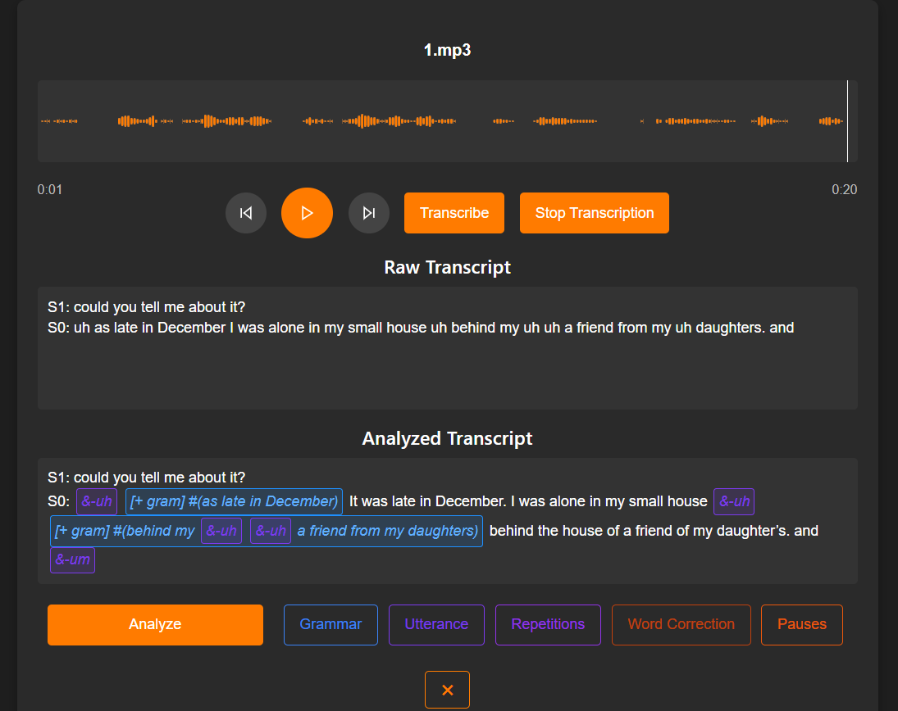

2024 · Automatic Speech Recognition
Aphasia
Transcription
An experimental study of how speech-recognition systems (mainly Whisper) fail on aphasic speech—and whether fine-tuning, decoding choices, phoneme evidence, and integrating LLM analysis can produce more accurate transcripts.

Overview
In this project we first benchmarks six ASR models including Whisper Base, Whisper Large-v3, configured Faster Whisper, a fine-tuned Whisper model, AssemblyAI, and Gemini 2.5 Pro across six aphasic speech recordings. Evaluation separates aphasic participant speech from interviewer speech and compares word error rate alongside substitutions, deletions, and insertions.
In the second part, we propose a pipeline in wich we a recording goes through a Faster whisper and a Wav2Vec phoneme model in parallel, then fed to Gemini 2.5 Pro by providing useful metadata to decide which parts should be corrected.
The final part explores a speech-analysis assistant that converts transcripts into TalkBank CHAT notation, including filled pauses, repetition and retracing, grammar markers, and word corrections. The experiments show why LLM post-processing should be limited to flagged spans as rewriting an entire transcript introduces too many false positives.
View source on GitHub